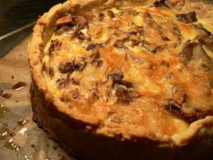

Thomas Keller's over-the-top mushroom quiche
Long ago, I went through a quiche phase, turning them out several times a week in frozen crusts from FreshDirect. Delicious, but utterly boring. Luisa told me that Thomas Keller had recipes for quiches that were two inches tall and amazing. She sent me one of those recipes, but I was too inexperienced to try it, and I had no clue about making my own crust.
Years passed, and the July issue of Food & Wine fell into my hands. In it was Keller’s recipe for over-the-top mushroom quiche, and I figured I was as ready now as I ever would be, and I should give it a go, ignoring my cholesterol for a day.
And it took a day. I’ve never spent such a long time on a pie. The crust took hours on its own. Cutting two sticks of butter into two cups of flour by hand nearly wiped me out. But the crust did come together fine, and, despite appearances, it didn’t crumble or break much when I transferred it into the springform pan (unlike the last time I made a pie in that pan: Nigella’s disastrous pizza rustica from exactly one year ago).

The filling was simple and outrageous: two pounds of mushrooms, two cups of cream, two cups of milk, six eggs. I had to cut it down considerably, since my crust shrank a good inch as I was prebaking it. Keller said to leave an inch overhang, but I didn’t have nearly enough dough for such excess. Is my springform pan too tall? But even after the sinking, I had the tallest crust I’ve ever made, with ample room for most of the mushrooms and about half of the custard mixture.
An hour later, at 11:30 p.m., when this damn thing was finally ready to eat, we were hardly interested anymore, but we still ate hot slivers of it. As we ate, I told Nathan, “This is excellent, but I will never make it again.” It was even better cold the next morning for breakfast, but I still don’t see myself devoting another day to it. Maybe in a year, when I have bit more experience. Has anyone else made a Keller quiche?
Comments
Hey there! Just wanted to say that I love your blog and I never miss a post, although I am not a commenter…Got excited tonight to see that I popped in 4 minutes after you posted so thought I’d say hello : )
Again, wow. This looks absolutely amazing. I’ve never thought of mushroom quiche as an expensive endeavor before, but this looks like it might actually cost something to put together. I love the high crusted quiche you get in the bakeries in France, that must be where Keller got his inspiration. Anyway, wow.
I did! Or, at least, I attempted to… the quiche lorraine in the Bouchon cookbook. Sounds like the same crust, although ours utterly collapsed during the blind baking. We ended up making a very, very decadent frittata with the fillings.
Killer quiche… Quiche is usually something I will do on a busy weeknight when I need something fast to put on the table, so I’m really unfamiliar with the kind that takes over 5 hours to put together. I’m impressed with the results, and it probably tasted wonderful, although my cholesterol went up about 40 points just reading the ingredients list.
Gorgeous! I’m so impressed, though I know that feeling of laboring for so long over something that you end up not wanting to eat it when it’s done. Especially when it’s a million degrees out. :)
Thanks, Anne! Hello to you, too.
Mary: I like how you got a preview on Facebook. I feel like we have a secret club! This wouldn’t have been so expensive without the $7 I spent on oyster mushrooms. I’m just glad I had the milk and cream on hand.
Anita: I was worried that my mushrooms would end up in a fritatta (some of them actually did) as I watched my crust shrink and melt in the oven. I asked a chef about the trouble I have with these buttery crusts, and he said, “You can’t reinvent pie crust.”
Christine: I feel the same way, and if I do this again, it will be a scaled-down, easy version.
Thanks, Luisa! I never would have made it if it weren’t for you.
Check out French Laundry at Home… http://carolcookskeller.blogspot.com/. She is cooking her way through the French Laundry Cookbook.
It’s a bummer it took a whole day to make your quiche! Too bad there isn’t a shortcut to get a result as delicious.
Wow! It’s an amazing looking quiche and it sounds amazingly good. Despite your warning about the making taking all day, just looking at the picture makes me want to try.
Add a comment